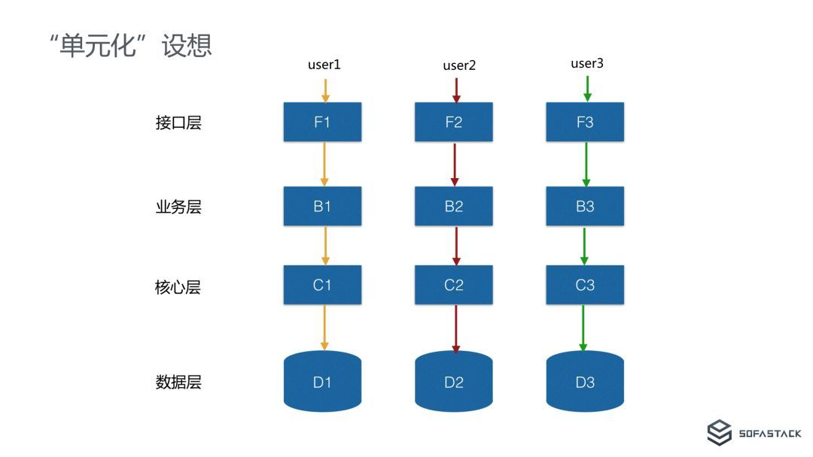
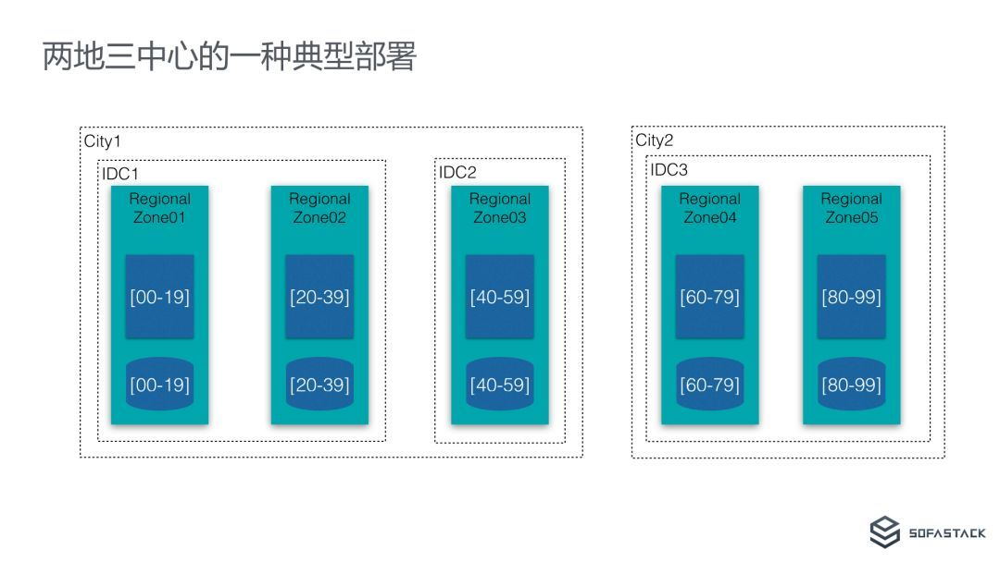
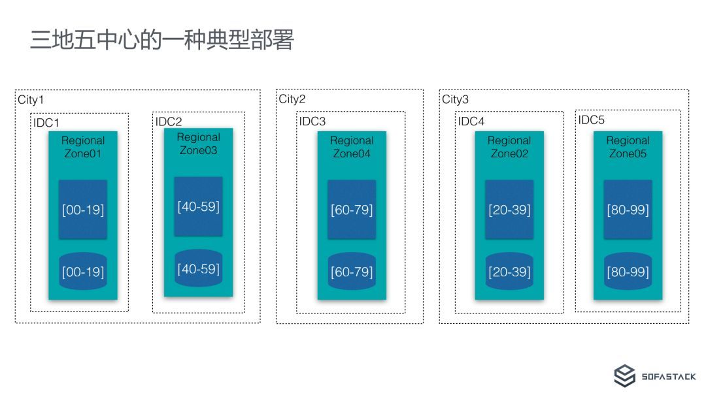
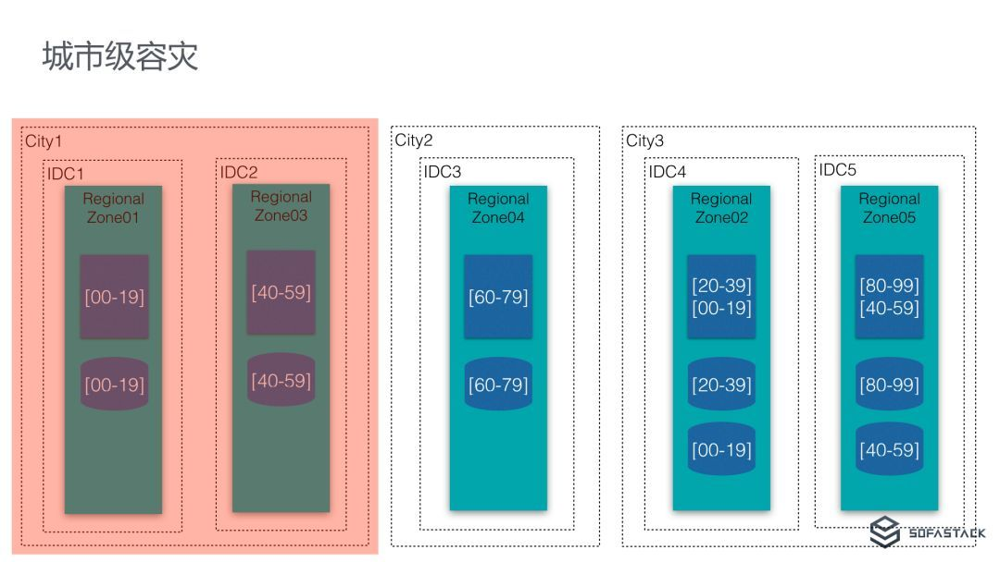
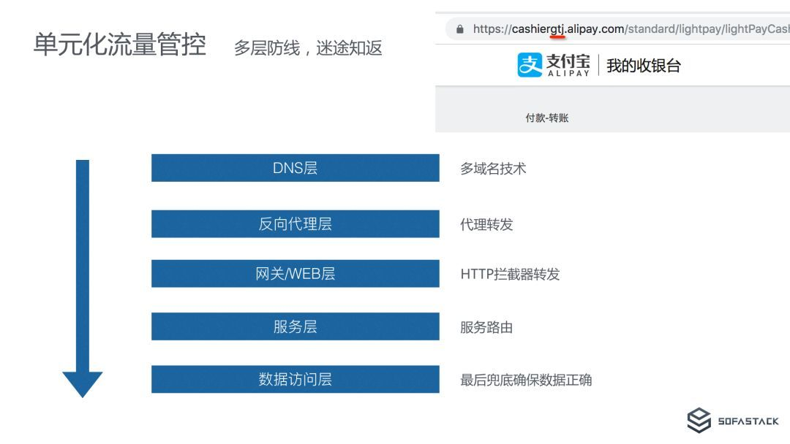
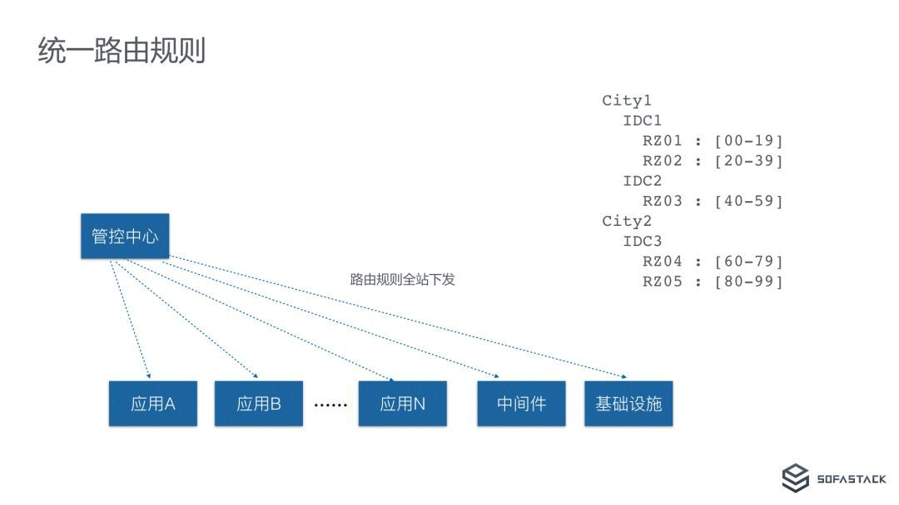
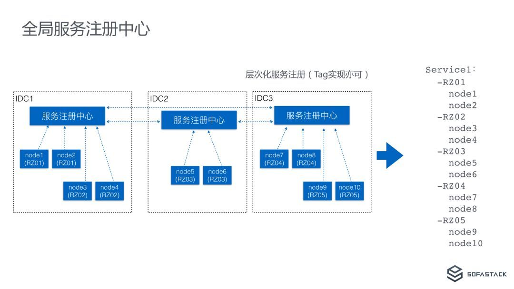
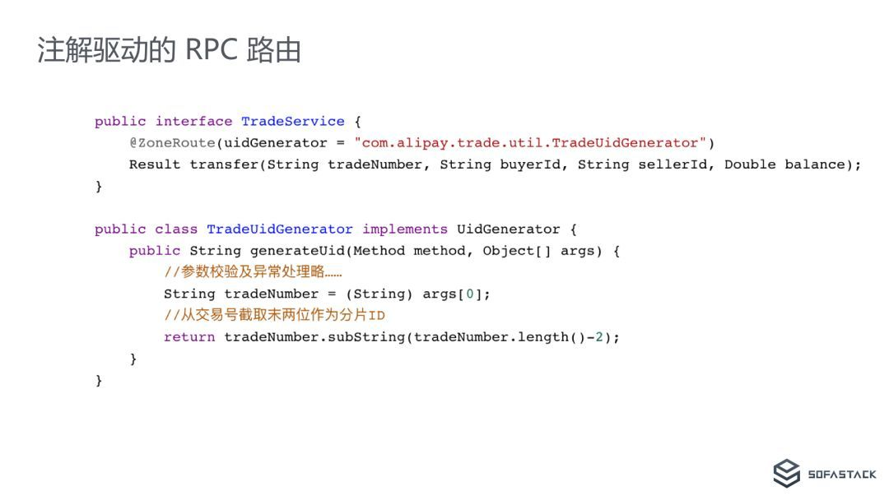

问题定义
高可用架构要去除单点的潜在威胁。
涉及多数据中心、多地部署的设计的意义和价值很难在日常工作中体现出来，但体现了超前布局的思考。
所谓的单点包括：
- 单服务器
- 单应用
- 单数据库
- 单机房
- 单地部署
所谓单元，是指一个能完成所有业务操作的自包含集合，在这个集合中包含了所有业务所需的所有服务，以及分配给这个单元的数据。
蚂蚁的单元化
引入服务治理
引入服务治理机制，使整个服务可以在物理上灵活扩展。
强依赖：服务注册中心/服务命名+查找机制。
在阿里的语境里，是由服务注册中心的中间件来进行流量调配的。
分库分表
一个比较好的实践是：逻辑拆分先一步到位，物理拆分慢慢进行。
以账户表为例，将用户 ID 的末两位作为分片维度，可以在逻辑上将数据分成 100 份，一次性拆到 100 个分表中。这 100
个分表可以先位于同一个物理库中，随着系统的发展，逐步拆成 2 个、5 个、10 个，乃至 100
个物理库。数据访问中间件会屏蔽表与库的映射关系，应用层不必感知。
换言之，蚂蚁的数据总是分成 100 个逻辑分片。至于这 100 个逻辑分片是 100 张表，还是会膨胀为 100 个库 * x 张表，都可以由数据库中间件进行屏蔽，且自由扩展。
强依赖：数据库中间件，把逻辑读写转换为物理表读写。
同城多机房
所有机房共用一个服务注册中心，所有的请求由它统一分发
要突破单机房的容量限制，最直观的解决办法就是再建新的机房，机房之间通过专线连成同一个内部网络。应用可以部署一部分节点到第二个机房，数据库也可以将主备库交叉部署到不同的机房。
这一阶段，只是解决了机房容量不足的问题，两个机房逻辑上仍是一个整体。
缺点：
- 服务层逻辑上是无差别的应用节点，每一次 RPC 调用都有一半的概率跨机房；
- 每个特定的数据库主库只能位于一个机房，所以宏观上也一定有一半的数据库访问是跨机房的。
每个机房独占一个服务注册中心，所有的请求独立分发
改进后的同城多机房架构，依靠不同服务注册中心，将应用层逻辑隔离开。只要一笔请求进入一个机房，应用层就一定会在一个机房内处理完。当然，由于数据库主库只在其中一边，所以这个架构仍然不解决一半数据访问跨机房的问题。
这个架构下，只要在入口处调节进入两个机房的请求比例，就可以精确控制两个机房的负载比例。基于这个能力，可以实现全站蓝绿发布。
两地三中心
城市 1：idc1（registry1 + leader） + idc2（registry2 + replica1）。所有的服务都访问 leader 数据库。
城市 2：idc3（registry3 + replica2） 另一个城市为备份的中心，访问replica，隔离对 leader 的依赖。
可以概括为同城热备，异地冷备。两地三中心还有一种形态，就是只有一个中心是活的，另有一个同城灾备，一个异地灾备。
所谓 “ 双活 ” 或 “ 多 活 ” 数据中心，区别于 传统 数据中心 和 灾备中心的模式，前者 多个 或两个数据中心都处于运行当中，
运行相同的应用，具备同样的数据，能够提供跨中心业务负载均衡运行能力，实现持续的应用可用性和灾难备份能力， 所以称为 “双活 ” 和 “ 多
活 ” ；后者是 生产 数据中心投入运行， 灾备 数据中心处在不工作状态，只有当灾难发生时，生产数据中心瘫痪，灾备中心才启动。
“两地三中心”是一种在金融系统中广泛应用的跨数据中心扩展与跨地区容灾部署模式，但也存在一些问题。异地灾备机房距离数据库主节点距离过远、访问耗时过长，异地备节点数据又不是强一致的，所以无法直接提供在线服务。
在扩展能力上，由于跨地区的备份中心不承载核心业务，不能解决核心业务跨地区扩展的问题；在成本上，灾备系统仅在容灾时使用，资源利用率低，成本较高；在容灾能力上，由于灾备系统冷备等待，容灾时可用性低，切换风险较大。
两地三中心看起来很美好，其实无法解决立刻切换的问题-异地延迟无法消除。
单元化
蚂蚁金服发展单元化架构的原始驱动力，可以概括为两句话：
- 异地多活容灾需求带来的数据访问耗时问题，量变引起质变；
- 数据库连接数瓶颈制约了整体水平扩展能力，危急存亡之秋。
单元化的设想，涉及到业务层和核心层的分离（单一系统的业务层和核心层，中台层的业务中台和核心中台）：

单元化架构基于这样一种设想：如果应用层也能按照数据层相同的拆片维度，把整个请求链路收敛在一组服务器中，从应用层到数据层就可以组成一个封闭的单元。数据库只需要承载本单元的应用节点的请求，大大节省了连接数。“单元”可以作为一个相对独立整体来挪动，甚至可以把部分单元部署到异地去。
单元化有几个重要的设计原则：
- 核心业务必须是可分片的（有些业务是不可分片的：比如风控、营销的全局配置）
- 必须保证核心业务的分片是均衡的，比如支付宝用用户 ID 作分片维度
- 核心业务要尽量自包含，调用要尽量封闭
- 整个系统都要面向逻辑分区设计，而不是物理部署
逻辑上只分 10 个 RegionZone，每个 R Zone 承载 20 个逻辑分片。

注意，这种两地三中心的 ldc 之间存储的不是同构数据，而是异构数据，即一部分分片，这是一种自然而然的想法-现实中的 idc 通常全局都是同构的，且全局只有一个主同时存在。

进入三地五中心，正好每个中心一个 R Zone。
回到前面买早餐的例子，小王的 ID 是 12345666，分片号是 66，应该属于 Regional Zone 04；而张大妈 ID 是 yig54321233，分片号 33，应该属于 Regional Zone 02。
应用层会自动识别业务参数上的分片位，将请求发到正确的单元。业务设计上，我们会保证流水号的分片位跟付款用户的分片位保持一致，所以绝大部分微服务调用都会收敛在
Regional Zone 04 内部。
但是转账操作一定会涉及到两个账户，很可能位于不同的单元。张大妈的账号就刚好位于另一个城市的 Regional Zone
02。当支付系统调用账务系统给张大妈的账号加钱的时候，就必须跨单元调用 Regional Zone 02
的账务服务。图中用红线表示耗时很长（几十毫秒级）的异地访问。
涉及多个账户的操作，完全可能跨单元。
城市级容灾的方案，强依赖于 OB 的选主、换主的机制：

这也意味着，不同城市的不同 idc能够承载多个 R zone的数据，进而激活多个 R zone 的中间件的流量切换规则。
一个城市整体故障的情况下，应用层流量通过规则的切换，由事先规划好的其他单元接管。
数据层则是依靠自研的基于 Paxos 协议的分布式数据库
OceanBase，自动把对应容灾单元的从节点选举为主节点，实现应用分片和数据分片继续收敛在同一单元的效果。我们之所以规划为“两地三中心”“三地五中心”这样的物理架构，实际上也是跟
OceanBase 的副本分布策略息息相关的。数据层异地多活，又是另一个宏大的课题了，以后可以专题分享，这里只简略提过。这样，借助单元化异地多活架构，才能实现开头展示的“26 秒完成城市级容灾切换”能力。
强依赖的技术组件：
- DNS 层（最顶层基础设施层）
- 反向代理层（子网网关）
- 网关 /WEB 层（接入层网关）
- 服务层（可再分为业务层和核心层）
- 数据访问层。
单元化流量管控是一个自上而下的、复杂的、系统性工程：

- DNS 层照理说感知不到任何业务层的信息，但我们做了一个优化叫“多域名技术”。比如 PC 端收银台的域名是 cashier.alipay.com，在系统已知一个用户数据属于哪个单元的情况下，就让其直接访问一个单独的域名，直接解析到对应的数据中心，避免了下层的跨机房转发。例如上图中的
cashiergtj.alipay.com，gtj 就是内部一个数据中心的编号。移动端也可以靠下发规则到客户端来实现类似的效果。- 反向代理层是基于 Nginx 二次开发的，后端系统在通过参数识别用户所属的单元之后，在 Cookie 中写入特定的标识。下次请求，反向代理层就可以识别，直接转发到对应的单元。
- 网关 /Web 层是应用上的第一道防线，是真正可以有业务逻辑的地方。在通用的 HTTP 拦截器中识别 Session 中的用户 ID 字段，如果不是本单元的请求，就 forward 到正确的单元。并在 Cookie 中写入标识，下次请求在反向代理层就可以正确转发。
- 服务层 RPC 框架和注册中心内置了对单元化能力的支持，可以根据请求参数，透明地找到正确单元的服务提供方。
- 数据访问层是最后的兜底保障，即使前面所有的防线都失败了，一笔请求进入了错误的单元，在访问数据库的时候也一定会去正确的库表，最多耗时变长，但绝对不会访问到错误的数据。
一般应用层或者业务中间件只能加上拦截器进行 forward/routing。
统一路由规则：

这么多的组件要协同工作，必须共享同一份规则配置信息。必须有一个全局的单元化规则管控中心来管理，并通过一个高效的配置中心下发到分布式环境中的所有节点。
规则的内容比较丰富，描述了城市、机房、逻辑单元的拓扑结构，更重要的是描述了分片 ID 与逻辑单元之间的映射关系。

服务注册中心内置了单元字段，所有的服务提供者节点都带有“逻辑单元”属性。不同机房的注册中心之间互相同步数据，最终所有服务消费者都知道每个逻辑单元的服务提供者有哪些。RPC
框架就可以根据需要选择调用目标。
注意看，上图的右边提供了一个细分的物理寻址的结构。

RPC
框架本身是不理解业务逻辑的，要想知道应该调哪个单元的服务，信息只能从业务参数中来。如果是从头设计的框架，可能直接约定某个固定的参数代表分片
ID，要求调用者必须传这个参数。但是单元化是在业务已经跑了好多年的情况下的架构改造，不可能让所有存量服务修改接口。要求调用者在调用远程服务之前把分片
ID 放到 ThreadLocal 中？这样也很不优雅，违背了 RPC 框架的透明原则。于是我们的解决方案是框架定义一个接口，由服务提供方给出一个实现类，描述如何从业务参数中获取分片
ID。服务提供方在接口上打注解，告诉框架实现类的路径。框架就可以在执行 RPC 调用的时候，根据注解的实现，从参数中截出分片
ID。再结合全局路由规则中分片 ID 与逻辑单元之间的映射关系，就知道该选择哪个单元的服务提供方了。
这里通过接口指定了注解的参数的契约，用注解来解耦了配置对流程的入侵。用配置来减少对原流程契约的改造，使服务成为整体框架的一个插件。
改造这些东西带来的工程经验，是书本上学不到的。
蚂蚁要改造的业务分别是：交易、收单、微贷、支付、账务。
不同的数据的延时性、闭合性不同，影响了 zone 的分法：
可以按照选择好的维度进行分区的数据，真正能被单元化的数据。这类数据通常在系统业务链路中处于核心位置，单元化建设最重要的目标实际上就是把这些数据处理好。比如订单数据、支付流水数据、账户数据等，都属于这一类型。 这类数据在系统中的占比越高，整体单元化的程度就越高，如果系统中全部都是这样的数据，那我们就能打造一个完美单元化的架构。不过现实中这种情况存在的可能性几乎为零，因为下面提到的两类数据，或多或少都会存在于系统当中。
不能被分区的数据，全局只能有一份。比较典型的是一些配置类数据，它们可能会被关键链路业务访问，但并不频繁，因此即使访问速度不够快，也不会对业务性能造成太大的影响。 因为不能分区，这类数据不能被部署在经典的单元中，必须创造一种非典型单元用以承载它们。
乍看与上面一类相似，但两者有一个显著的区别，即是否会被关键链路业务频繁访问。如果系统不追求异地部署，那么这个区别不会产生什么影响；但如果希望通过单元化获得多地多活的能力，这仅有的一点儿不同，会让对这两类数据的处理方式截然不同，后者所要消耗的成本和带来的复杂度都大幅增加。究其原因是异地部署所产生的网络时延问题。根据实际测试，在网络施工精细的前提下，相距约 2000 公里的 2 个机房，单向通信延时大约 20ms 左右，据此推算在国内任意两地部署的机房，之间延时在 30ms 上下。假如一笔业务需要 1 次异地机房的同步调用，就需要至少 60ms 的延时（请求去，响应回）。如果某个不能单元化的数据需要被关键业务频繁访问，而业务的大部分服务都部署在异地单元中，网络耗时 60ms 的调用在一笔业务中可能有个几十次，这就是说有可能用户点击一个按钮后，要等待数秒甚至数十秒，系统的服务性能被大幅拉低。这类数据的典型代表是会员数据（全体客户信息），对于支付宝这类 To C 的系统来说，几乎所有的业务都需要使用到会员信息，而会员数据却又是公共的。因为业务必然是双边的，会员数据是不能以用户维度分区的。
- Rzone：最符合理论上单元定义的 zone，每个 RZone 都是自包含的，拥有自己的数据，能完成所有业务。
- GZone：部署了不可拆分的数据和服务，这些数据或服务可能会被RZone依赖。GZone 在全局只有一组，数据仅有一份。
- CZone：同样部署了不可拆分的数据和服务，也会被 RZone 依赖。跟 GZone 不同的是，CZone 中的数据或服务会被 RZone 频繁访问，每一笔业务至少会访问一次；而 GZone 被 RZone 访问的频率则低的多。

RZone 是成组部署的，组内 A/B 集群互为备份，可随时调整 A/B 之间的流量比例。可以把一组 RZone
部署的任意机房中，包括异地机房，数据随着 zone 一起走。GZone 也是成组部署的，A/B 互备，同样可以调整流量。GZone 只有一组，必须部署在同一个城市中。
CZone 是一种很特殊的 zone，它是为了解决最让人头疼的异地延时问题而诞生的，可以说是支付宝单元化架构的一个创新。 CZone
解决这个问题的核心思想是：把数据搬到本地，并基于一个假设：大部分数据被创建（写入）和被使用（读取）之间是有时间差的：
把数据搬到本地：在某个机房创建或更新的公共数据，以增量的方式同步给异地所有机房，并且同步是双向的，也就是说在大多数时间，所有机房里的公共数据库，内容都是一样的。这就使得部署在任何城市的
RZone，都可以在本地访问公共数据，消除了跨地访问的影响。整个过程中唯一受到异地延时影响的，就只有数据同步，而这影响，也会被下面所说的时间差抹掉。时间差假设：举例说明，2 个用户分属两个不同的 RZone，分别部署在两地，用户 A 要给用户 B 做一笔转账，系统处理时必须同时拿到 A 和 B 的会员信息；而 B 是一个刚刚新建的用户，它创建后，其会员信息会进入它所在机房的公共数据库，然后再同步给 A 所在的机房。如果
A 发起转账的时候，B 的信息还没有同步给 A 的机房，这笔业务就会失败。时间差假设就是，对于 80%
以上的公共数据，这种情况不会发生，也就是说 B 的会员信息创建后，过了足够长的时间后，A 才会发起对 B 的转账。
总结：
- 分 AB （服务）组可以调配流量，也可以互为主备-是为多活。
- RZone 准备 AB （服务）组，每个 ldc 有且只有一组，共用一组 sharding 的单主数据库。
- 全局只有一组 GZone，在同城的一个 ldc 内（不跨城低延迟），只有一组单主的数据库（无分片），每个 ldc 有一个组（非 A 即 B）。
- CZone 在不同城市里多主部署（无分片数据），每个 ldc 有自己的一组，两地四中心则有 ABCD 四个（服务）组。
- 弱一致性带来弱依赖假设，我们可以接受主从延迟，大部分的交易依赖于同一个交易上下文，大家其实都是写后读交易。但少部分数据不是写后读的，适合放在 Czone 里。大部分情况下，弱一致性可以制造流畅的交易，但要对弱一致性准备兜底的重试方案，不然的话就会丢失交易（掉单）。RZone 和 CZone 存的都是交易流水数据，CZone 是一种技术创新。写后读的弱一致性问题在分布式场景下广泛存在，倒也不限于单元化。着眼点应该放在分布式系统本身上面。
容灾的基本步骤包括
自底向上激活、预热，切换流量，把有状态的服务先启动起来，然后启动无状态服务，然后切换其他中间件，最后切换流量调配规则。这样可以让慢的服务热到足够快，提供丝滑般的体验：
- 数据库切换
- 缓存容灾切换
- 多活规则切换
- 中间件切换
- 负载均衡切换
- 域名解析切换
参考文献：